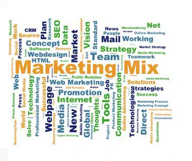
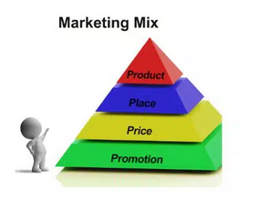

¿Qué es el marketing mix?
l Marketing Mix, también conocido como las 4P, es un conjunto de estrategias y tácticas fundamentales que
las empresas utilizan para comercializar y posicionar sus productos o servicios en el mercado. Estas
estrategias fueron propuestas inicialmente por el profesor Jerome McCarthy en la década de 1960 y luego
ampliadas por Philip Kotler.
Asimismo el Marketing Mix es una herramienta estratégica que permite a las empresas abordar de manera
integral los diferentes aspectos que influyen en la comercialización de sus productos o servicios,
adaptándose a las necesidades del mercado y maximizando su efectividad.
¿Para qué sirve el marketing mix?
Estas son algunas funciones del marketing mix:
Desarrollo de estrategias integradas: Proporciona un marco para el desarrollo de estrategias de marketing
integradas y coherentes. Al considerar simultáneamente las cuatro variables, las empresas pueden crear un
enfoque completo y equilibrado.
Satisfacción del cliente: Se centra en entender y satisfacer las necesidades del cliente. Al diseñar
productos atractivos, establecer precios adecuados, distribuir y promocionar de manera efectiva, se busca
mejorar la satisfacción del cliente.
Diferenciación en el mercado: Permite a las empresas diferenciarse de la competencia al ajustar cada
variable de manera única. La combinación de producto, precio, distribución y promoción contribuye a la
creación de una identidad única en el mercado.
Optimización de recursos: Facilita la asignación eficiente de recursos al permitir que las empresas se
enfoquen en las áreas más efectivas para alcanzar sus objetivos. Ayuda a evitar el desperdicio de recursos
en otras áreas.
Adaptabilidad al mercado: Puede adaptarse a cambios en el mercado, en las preferencias del consumidor y en
la competencia. Esto permite a las empresas ser ágiles y ajustar su estrategia según sea necesario para
mantenerse competitivas.
Mejora de la rentabilidad: Al equilibrar las variables, las empresas pueden mejorar su rentabilidad. Una
fijación de precios adecuada, una gestión eficiente de la distribución y una promoción efectiva pueden
aumentar las ventas y los márgenes de beneficio.
Construcción de marcas y lealtad: Contribuye a la construcción y mantenimiento de marcas sólidas y
relaciones a largo plazo con los clientes. La consistencia en las estrategias de marketing mix ayuda a
construir la identidad de la marca y fomentar la lealtad del cliente.
Toma de decisiones fundamentadas: Proporciona un marco lógico para la toma de decisiones en marketing. Los
gerentes pueden evaluar y ajustar cada P de manera individual para alcanzar los objetivos de la empresa.